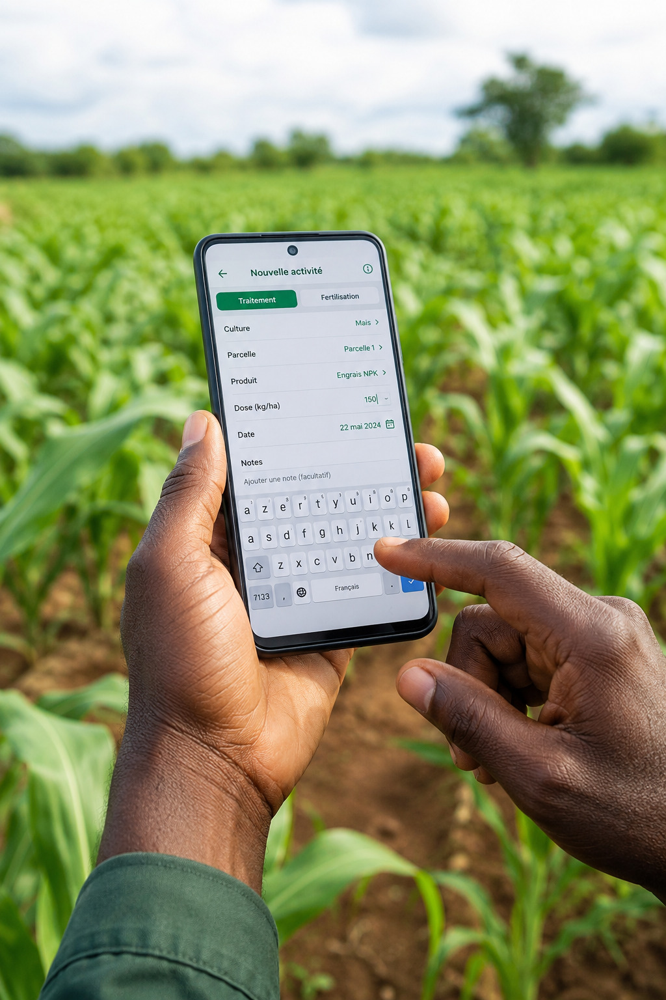
1
Publier
Le producteur publie son surplus en moins d'une minute, depuis son téléphone.
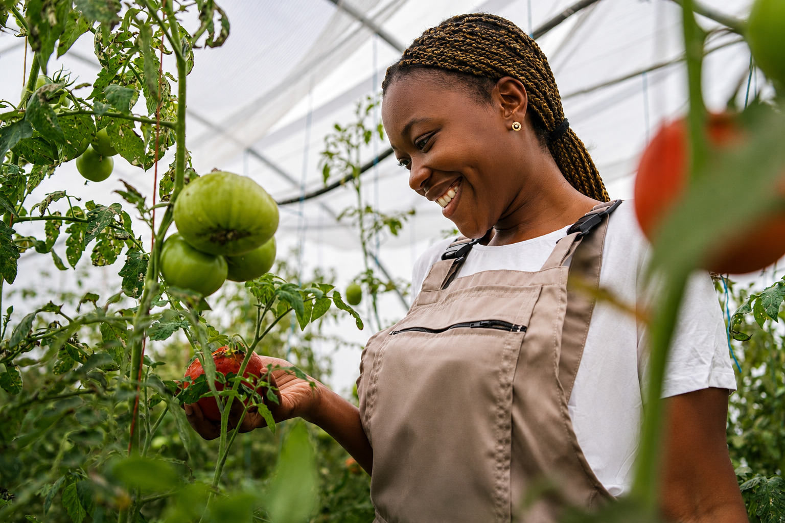
AgriFlash connecte producteurs agricoles et acheteurs locaux au Togo en moins de 60 secondes — pour zéro perte post-récolte.
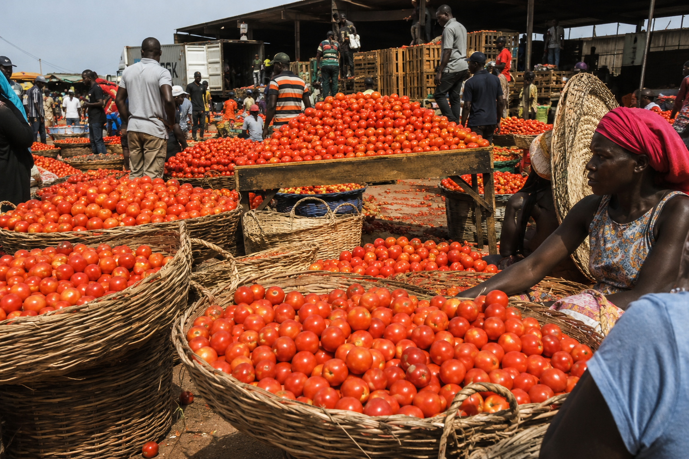
Des chiffres officiels qui parlent d'eux-mêmes
des tomates perdues en grande saison
Source : Thèse HAL, Université de Loméde pertes en petite saison
Source : Ministère de l'Agriculture du TogoTogolais en insécurité alimentaire
Source : FAO 2025du PIB togolais dépend de l'agriculture
Source : INSEED / PNDESUn processus simple, rapide et efficace

Le producteur publie son surplus en moins d'une minute, depuis son téléphone.
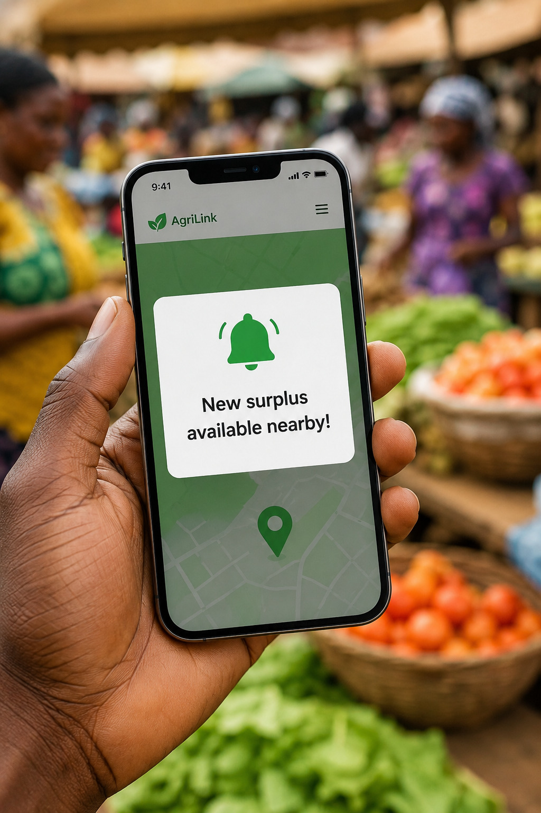
Les acheteurs proches reçoivent une notification immédiate pour agir rapidement.
Vendeur et acheteur se connectent directement et négocient rapidement.
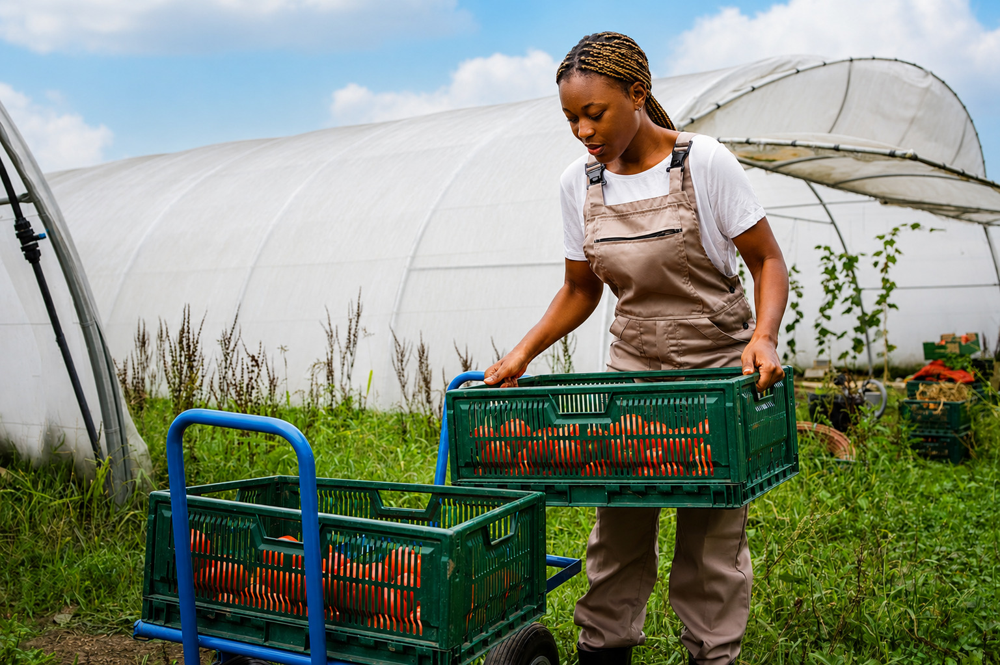
Les récoltes sont vendues, cuisinées et consommées — zéro gaspillage.
12 profils d'acheteurs déjà connectés à AgriFlash
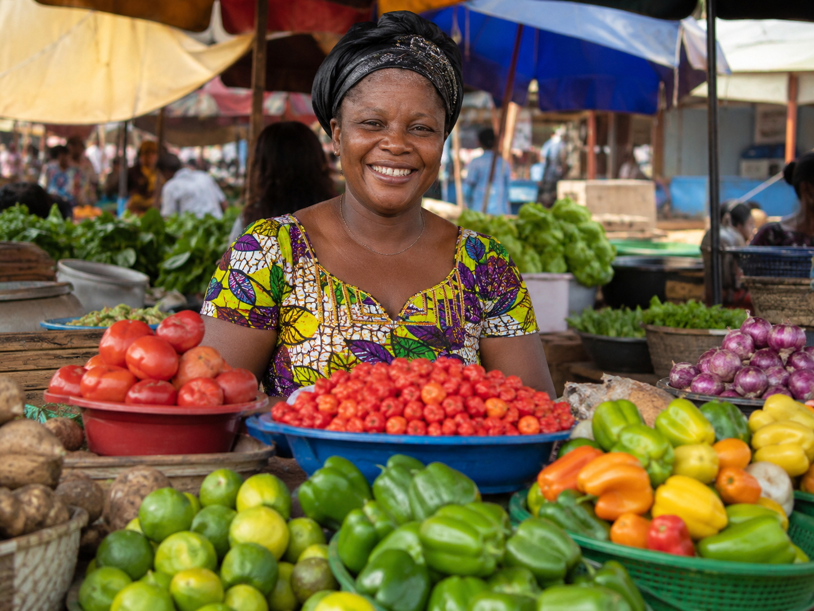
Approvisionnement rapide en produits frais pour vos étals quotidiens.
Réduisez vos coûts d'ingrédients avec des arrivages locaux en temps réel.
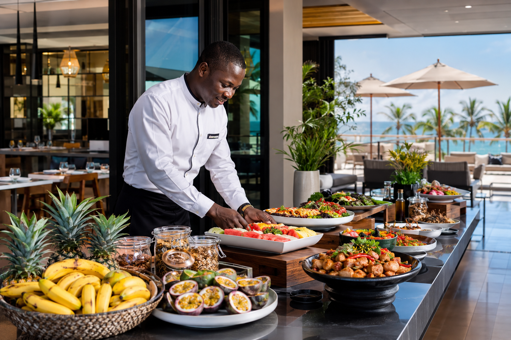
Offrez à vos clients des produits de la ferme de qualité premium.
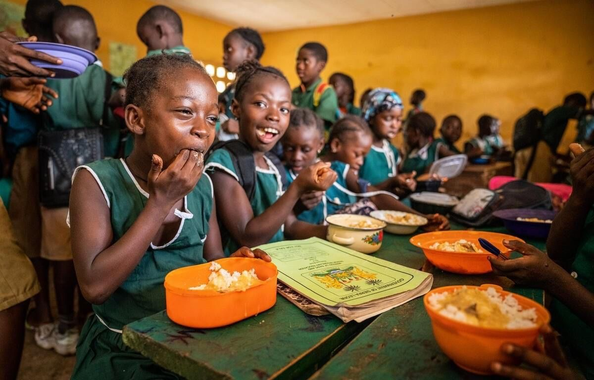
Des repas sains et abordables pour les établissements éducatifs.
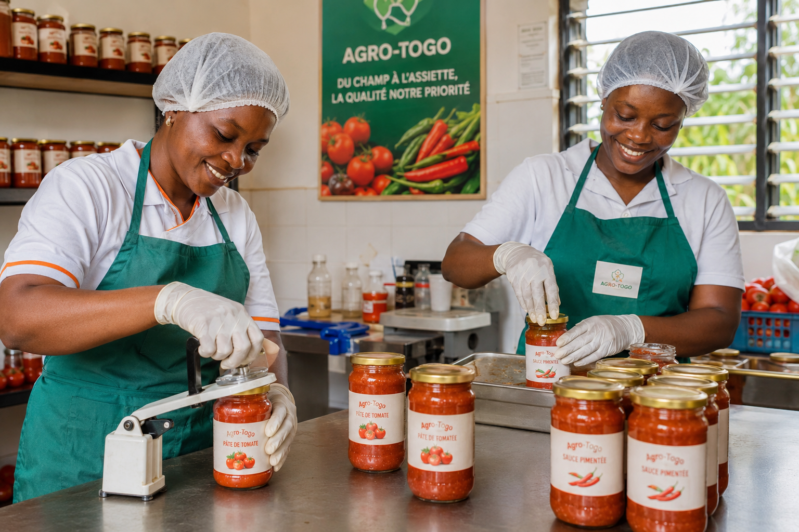
Matières premières agricoles directes pour vos unités de production.
Identifiez les volumes disponibles pour vos flux internationaux.
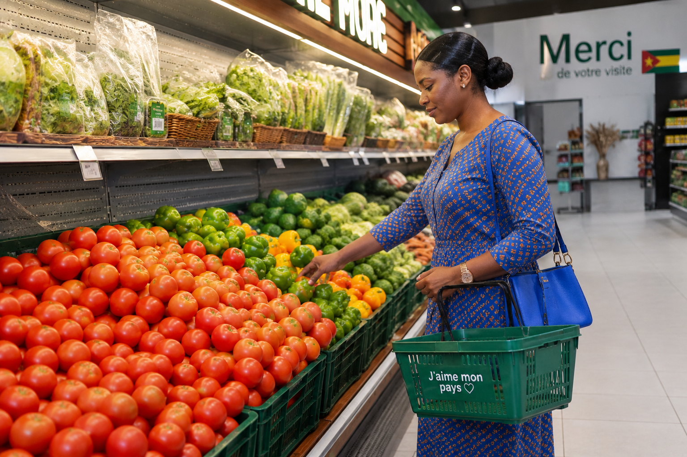
Rayons frais locaux à prix attractifs pour votre clientèle.
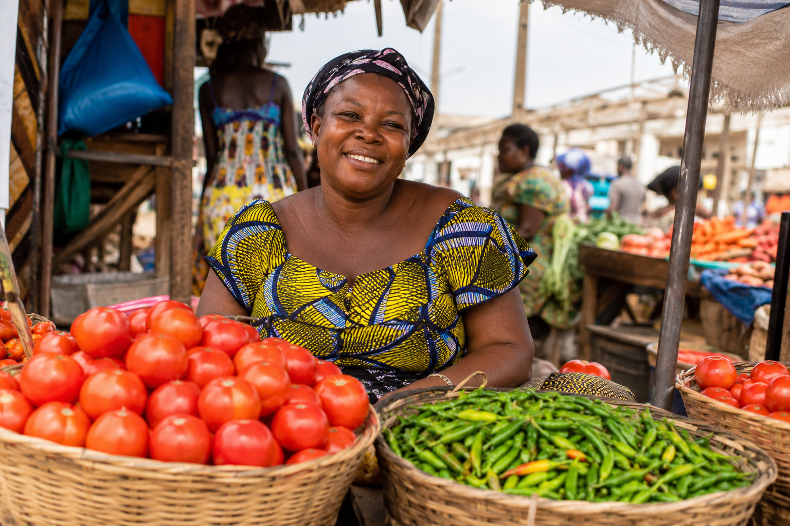
Stocks renouvelés quotidiennement au meilleur prix du marché.
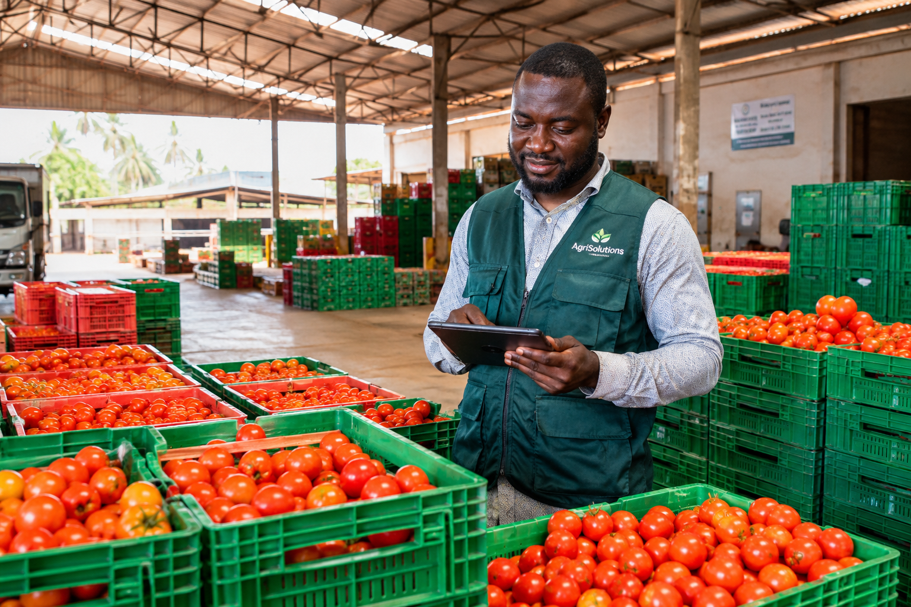
Volumes importants disponibles rapidement dans toutes les régions.
Des produits frais en direct des producteurs pour toute la famille.
Alimentation saine et nutritive pour les besoins des patients.
Optimisez vos marges sur vos événements et réceptions de groupe.
Visualisation en temps réel des surplus disponibles
Toutes les annonces actives — triées par urgence
L'effet d'AgriFlash sur les pertes post-récolte au Togo
Données simulées à des fins de démonstration.
Données simulées à des fins de démonstration.
Données simulées à des fins de démonstration.
Données simulées à des fins de démonstration.
Ce que disent nos utilisateurs
Grace à AgriFlash, je ne perds plus mes tomates. Je trouve des acheteurs en moins d'une demi-heure.
J'accède aux produits frais à des prix corrects. Tout le monde gagne et le gaspillage diminue.
AgriFlash est une solution concrète aux pertes alimentaires du Togo. Simple et rapide.
Ensemble, sauvons davantage, nourrissons mieux.